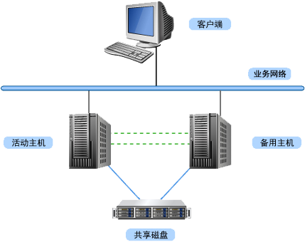

RoseHA
RoseHA是基于共享存储的高可用集群产品，实时监测应用资源运行状态，实现资源故障时自动切换，解决软、硬件的单点故障，从而保障业务系统连续运营。
方案亮点
RoseVM Cluster 镜像版可实现基于虚拟化平台的镜像型热备集群方案，有效利用虚拟化技术优势，将软、硬件资源整合，帮助用户轻松实现虚拟化平台中数据冗余实时备份和业务系统的7x24小时不间断运营。
RoseVM Cluster 镜像版支持的虚拟化环境包括VMware，Hyper-V，Xen，KVM等。支持P-P、P-V、V-V、V-P等多种架构
实时监测应用服务运行状态，如应用服务出现异常，自动切换应用服务至备机。
深度监控CPU/内存资源使用率，可进行智能预警和策略切换。
持续监测网络资源，如业务网卡或网络资源故障，将自动切换资源至可用备机。
图形化的管理工具，实时显示系统运行状态；提供多种事件告警方式，比如在线日志、短信、邮件等，方便用户进行日常管理，从而简化运维工作，降低运维难度。
支持规格
支持的操作系统
-
Windows:
- Windows Sever 2003 各发行版本
- Windows Sever 2008 各发行版本
- Windows Sever 2012 各发行版本
-
Linux:
- RedHat Enterprise Linux 5/6/7
- SUSE Linux Enterprise Server 10/1
- Asianux Sever 3/4
-
SCO:
- SCO OpenServer 5.0.x/UnixWare 7.x.x
-
Solaris:
- Sun Sparc Solaris 2.5.1/2.6/7/8/9/10
- Sun x86 Solaris 10
支持的应用
-
数据库:
- Oracle、MSSQL、Sybase、DB2、MySQL、Informix等
-
邮件服务器:
- Coremail、MDaemon、Postfix、Domino等
-
WEB服务器:
- IIS、Tomcat、Apache等
-
文件服务器:
- Samba、FTP、NFS等
-
中间件应用:
- WebLogic、WebSphere等
支持的存储
-
- SCSI/IPSAN/FCSAN/SAS等